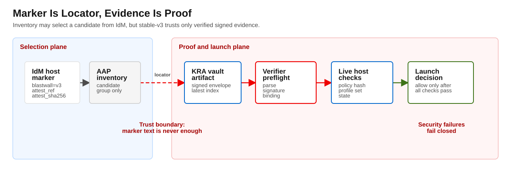
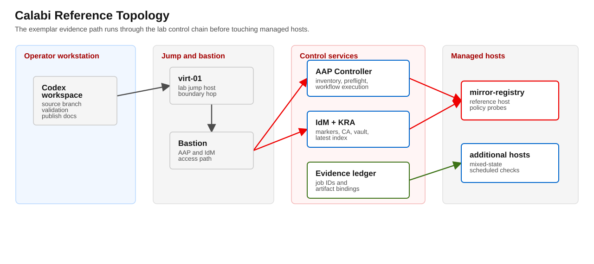

v3 packet
External Review Packet: Blastwall v3 Signed Attestation
This packet is the review-facing summary for v3 signed attestation controls on Blastwall. It is focused on trust and failure behavior in host selection, attestation retrieval, signature verification, and KRA assumptions.


Working Scope
This packet is the review-facing summary for v3 signed attestation controls on Blastwall. It is focused on trust and failure behavior in host selection, attestation retrieval, signature verification, and KRA assumptions.
Executive summary
v3 changes host trust from marker-claimed state to verified signed evidence.
- Host marker is still required for selection.
- Signature is the trust proof.
- Preflight verifies marker binding, signer trust, index freshness, and live host state in stable-v3.
- KRA-backed IdM vault paths are treated as part of the trust dependency graph.
- This branch requires
eigenstate.ipa >= 1.18.1for normalized inventory,access_path,sudo_risk,vault_health, andvault_artifact.
Quick reviewer checklist
- Can a marker be trusted without signed proof? No.
- Can preflight fail closed on host-state mismatch? Yes.
- Can the same host present different results across inventory and preflight? Yes, and preflight wins.
- Can KRA visibility failures be distinguished from host verification failures? Yes, with named failure states.
- Can breakglass bypass signature/drift/revocation failures? No.
Trust boundary disclosure
Initial signer deployment may colocate signer and AAP workflow execution. This improves operability but does not protect against a fully compromised AAP controller.
For high-assurance usage, operators should evaluate stronger signer isolation before claiming final stable posture.
Evidence map
Reference documents:
docs/blastwall-v3/signed-attestation-design.mddocs/blastwall-v3/operational-guidance.mddocs/blastwall-v3/stable-v3-readiness-checklist.mddocs/blastwall-v3/operator-runbook.mddocs/blastwall-v3/kra-topology-runbook.mddocs/blastwall-v3/revocation-and-breakglass.mddocs/blastwall-v3/evidence-consistency-matrix.mddocs/blastwall-v3/failure-state-manifest.ymldocs/blastwall-v3/scheduled-loop-soak.mddocs/blastwall-v3/stable-v3-rc-decision.mddocs/blastwall-v3/governance-owner-assignment.mdV3_IMPLEMENTATION_LEDGER.mdtools/blastwall_attestation_verify.pytools/blastwall_attestation_sign.pytools/audit_blastwall_inventory.py
Calabi evidence
Latest target-branch evidence was refreshed on 2026-05-25 UTC for the v3 publication branch. Use origin/v3 for the current upstream branch head; this review packet does not self-pin the branch commit. The latest publication-polish commit before the metadata refresh is b87dc6e0edb536c3a919a881d616060c6a20f354. The Controller-visible service-custody refresh observed commit 93fab21cd548c4ff7ca2d2addb21ecc1ad5c2cc3 by project update 4871.
Calabi is the current reference topology evidence path. It proves this workstation to virt-01 to bastion to IdM/AAP/KRA path; it does not prove broad portability across arbitrary RHEL, OpenShift, IdM, AAP, or KRA generations.
Calabi path: workstation tovirt-01(172.18.0.224) to bastion (172.16.0.30).AAP project branch:v3.KRA primary:idm-01.workshop.lan.KRA server list:idm-01.workshop.lan.KRA scope/owner: service-owned custody for stable-v3; sharedblastwall-attestationcustody remains lab/RC evidence. Stable-v3 rejects shared vault scope.Signer KID:8e62ab6d10d1a1a6b4261c4ee3fe79f76545c6d6.Policy NEVRA:blastwall-selinux-0.6.1-0.rc1.Policy hash:4b3e1d30e364331d408d8531d871ffcce23805a89b4cf44bd2977854be35bfc2.Registry hash:c8a533efc7ce60604d2a770964eea582005dde49ac2b882eea38c9701d612486.Current golden attestation ref:shared/blastwall-attestation/blastwall-attestations/mirror-registry.workshop.lan/base/1779161194.json.Current golden attestation hash:8d7f4a9844d7bceee2e0114ae55f66aa507e541676aad98ad3667c09701c3b11.
Healthy-path evidence remains on record:
- Policy pipeline workflow
2843, OpenShift/SPO apply-validation job2857, managed-host verification job2861, sign-attestation job2865, marker-promotion job2869, and post-promotion preflight job2876completed successfully on the signed-attestation branch. - Earlier policy pipeline workflow
2177and runtime verification workflow2227completed successfully. - Managed-host evidence digest
16dc41143e934a4a1cad5c138867a8dfe0e9dec8fa12ff7dda6456302a190625confirmed the deny probes still block AF_ALG, BPF map/prog load, AF_PACKET, user namespace,io_uring_setup, Dirty FragNETLINK_XFRM, Dirty FragAF_RXRPC, and FragnesiaAF_ALGentry points withEPERM/EACCESevidence.
Live fail-closed checks currently recorded:
- Drifted current policy hash: AAP preflight jobs
2827and3478failed withFAIL_DRIFTED_POLICY. - Bad signer allowlist: AAP preflight jobs
2830and3485failed withFAIL_SIGNER_UNTRUSTED. - Bad configured KRA primary/server: AAP preflight job
2835failed closed at configured KRA resolution formissing-kra.workshop.lan. - KRA health: job
3698passed, missing-canary job3701failedFAIL_CANARY_MISSING, and bad-primary job3702failed closed. - Stable-v3 shared-custody guard: job
3918failed closed withstable-v3 rejects shared vault scope. - Earlier stable-v3 non-shared custody probes
3914,3987, and3991failed before the non-shared argument remediation. They are superseded by service-owned KRA health4872, shared rejection4876, policy pipeline4922, runtime workflow4968, and inventory audit4989. - Transition-v3 lab/RC shared-custody path: health job
3922, policy pipeline workflow4046, standalone signed preflight4082, and runtime workflow4102passed. Strict audit4098failed closed on the intentional missing-artifact fixture. - Destructive artifact visibility:
3421missing envelope and3439missing index failed closed. Final digest mismatch recapture used artifact4222, mutation4226, inventory4230, and preflight4233, which failed asFAIL_ATTESTATION_INTEGRITY; restore4237and inventory4241succeeded. - Destructive security failures:
3505signature tamper,3531replay,3557expiry,3579revoked latest index,3623profile mismatch, and3649host binding mismatch failed closed. - Revoked marker handling now maps to the
FAIL_REVOKED_ATTESTATIONfamily. Historical live job3601was already fail-closed. Final revoked-marker recapture used artifact4244, mutation4248, inventory4252, and preflight4255, which failed asFAIL_REVOKED_ATTESTATION; restore4259, inventory4263, final safety restore4266, and final inventory4270succeeded. - Breakglass:
3667passed only for scoped missing-envelope infrastructure visibility;3509,3535,3627,3682, and3686rejected security failures. - Restore proof: inventory sync
3690showed the current mirror marker and stale fixture marker restored; golden preflight3693passed afterward.
Mixed-state and continuous verification evidence are now installed and exercised:
- Inventory sync
3712showed three controlled states: current validmirror-registry.workshop.lan, stale legacystale-blastwall-01.workshop.lan, and current-but-brokenmissing-artifact-blastwall-01.workshop.lan. - Candidate preflight job
3725passed the valid host. - Stale preflight job
3728failed closed on the stale fixture. - Profile-base preflight job
3723failed closed because the broken fixture was intentionally included in that group. - AAP schedules
6through9install hourly KRA health, hourly inventory audit, daily candidate preflight, and daily runtime verification. - KRA health job
3731passed with canary present. - Candidate preflight job
3735passed and runtime workflow3736passed. - Strict inventory audit job
3772authenticated to FreeIPA, verified the valid mirror host, and failed closed onmissing-artifact-blastwall-01.workshop.lanwithFAIL_ATTESTATION_NOT_VISIBLEandvault_error_type=not_found. - Scheduled loop checks fired at
17:00Z,18:00Z, and19:00Zon 2026-05-19. KRA health jobs3776,3797, and3802passed; candidate preflight3780passed; runtime workflow3781passed; inventory audit jobs3778,3799, and3804failed closed on the intentional missing-artifact fixture while the valid host remained clean.
Review posture: source and Calabi evidence are ready for reference exemplar publication. docs/blastwall-v3/governance-owner-assignment.md is the adopter worksheet for organizations that operate the pattern locally, and fleet-scale claims should wait for broader scale evidence.
Failure-state map
FAIL_KRA_UNAVAILABLE: audit-side KRA or vault infrastructure outage.FAIL_ATTESTATION_NOT_VISIBLE: signed artifact visible in marker but not in configured KRA path.FAIL_INDEX_NOT_VISIBLE: index not visible or not current in configured path.FAIL_ATTESTATION_INTEGRITY: marker, latest index, or envelope digest disagreement.FAIL_SIGNER_UNTRUSTED: signer certificate or allowlist failure.FAIL_SIGNATURE_INVALID,FAIL_BINDING_MISMATCH,FAIL_DRIFTED_POLICY,FAIL_REVOKED_ATTESTATION: host/security failures.
Open risks
- AAP/signer co-location remains a governance decision, not a cryptographic replacement for AAP compromise.
- Cross-replica KRA behavior must remain explicit; implicit replica discovery is disallowed in stable-v3.
Reviewer acceptance criteria
- Confirm marker-vs-proof split is explicit in operator and preflight behavior.
- Confirm latest-generation replay protection and live host check in stable-v3.
- Confirm breakglass cannot bypass host trust failures.
- Confirm evidence package includes both healthy and failed cases, including KRA and security failure classes.
- Confirm ownership and escalation paths are named and staffed.